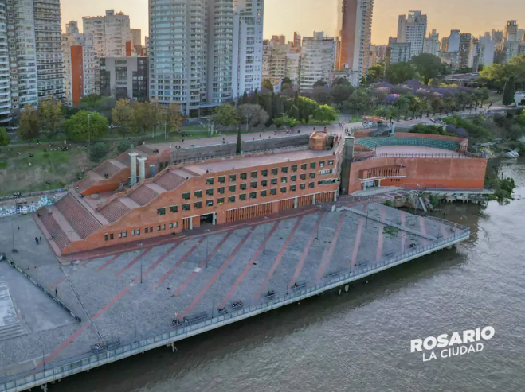

Informacion
El Teatro El Círculo es uno de los edificios más importantes de la ciudad de Rosario. Está ubicado en el centro, en la esquina de las calles Laprida y Mendoza. Es muy conocido por ser un lugar donde se presentan obras de teatro, conciertos y espectáculos de todo tipo. Fue inaugurado hace más de 100 años, en el año 1904, con una gran ópera llamada Otello. Por dentro, el teatro es muy grande y hermoso. Tiene una sala principal con forma de herradura, muchos pisos, decoraciones doradas y un techo pintado con imágenes artísticas. Además, suena tan bien que muchos músicos famosos han dicho que es uno de los teatros con mejor acústica del mundo. Visitar el Teatro El Círculo es como hacer un viaje en el tiempo. Nos ayuda a conocer cómo eran los espectáculos de antes y cómo la gente disfrutaba del arte y la música. Por todo esto, fue declarado Monumento Histórico Nacional. Es un verdadero orgullo para la ciudad de Rosario.